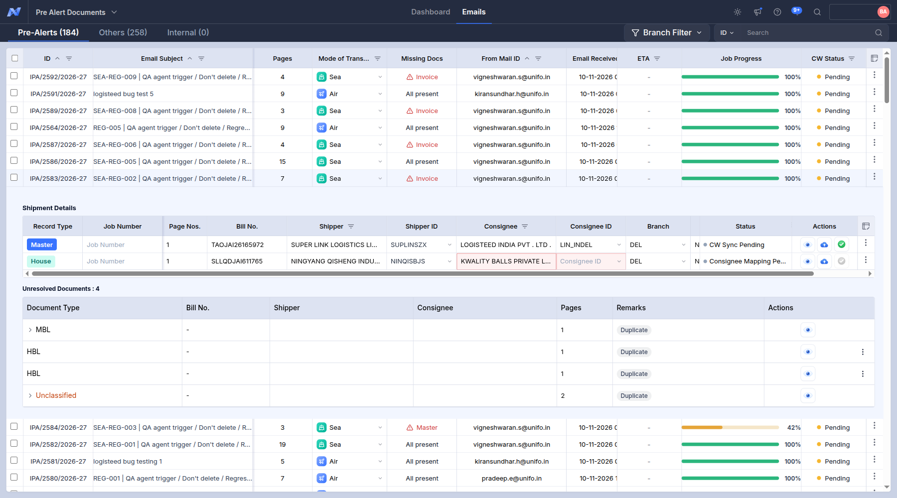
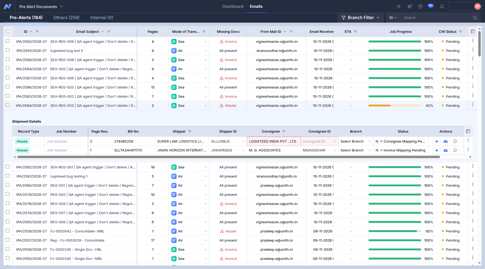
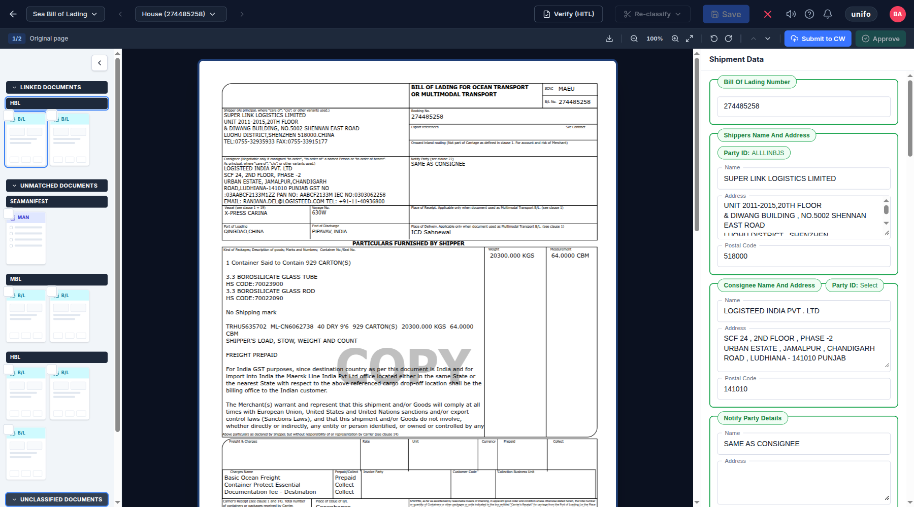
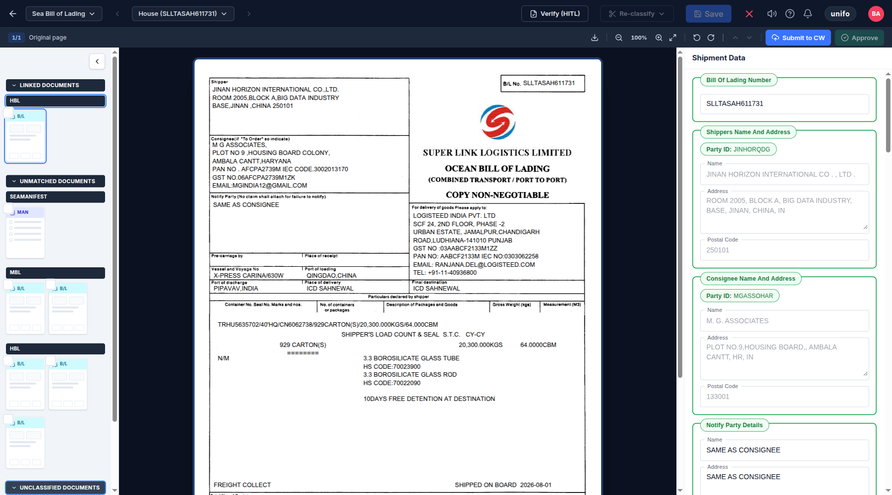
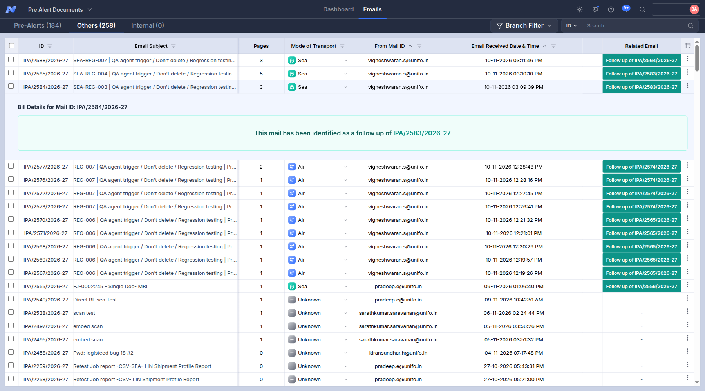

Trace of SEA-REG-003 - IPA-2584-2026-27 (9 screenshots, in the order they were taken)
Probable root cause
- MBL, SEAMANIFEST were classified but left under UNMATCHED documents: Nexus could not tie them to a Master/House.
- The Pre-Alerts row lists MBL under 'Unresolved Documents' (not linked).
01. Pre-Alerts tab: the row of this case (Pages, Missing Docs, Job Progress, CW Status)
01_prealerts_list.png
02. Pre-Alerts tab: the row of this case
02_list.png

03. Pre-Alerts tab, row expanded: Shipment Details (Master / House records, Bill No., status)
03_prealert_expanded.png
04. Pre-Alerts tab, row expanded, scrolled to 'Unresolved Documents' (what Nexus lists as not linked, with its remark)
04_unresolved_row.png

05. Viewer, parent House: Linked / Unmatched / Unclassified documents and the House data
05_parent_House.png

07. Viewer, parent House: Linked / Unmatched / Unclassified documents and the House data
07_parent_House.png

09. Others tab: follow-up emails and duplicates of this case
09_others_tab.png
